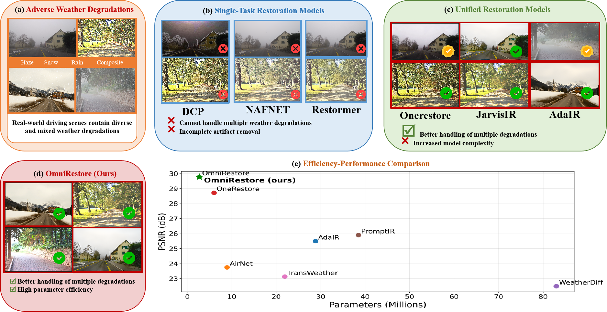
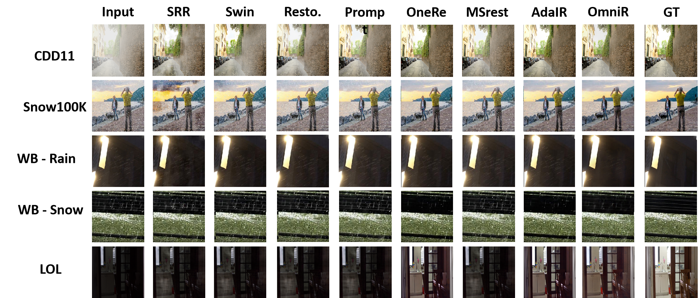
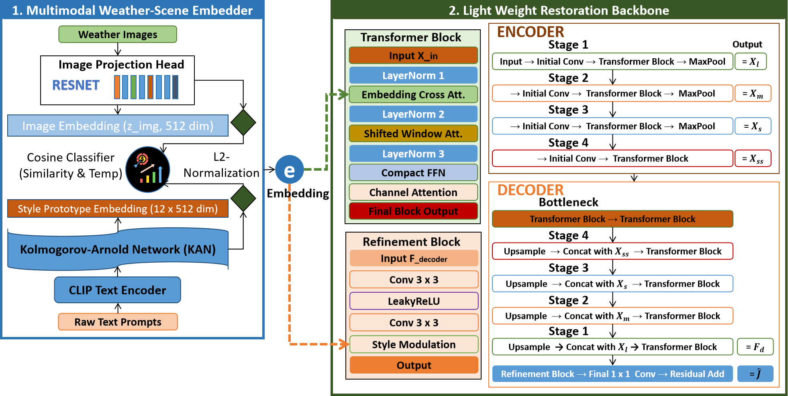
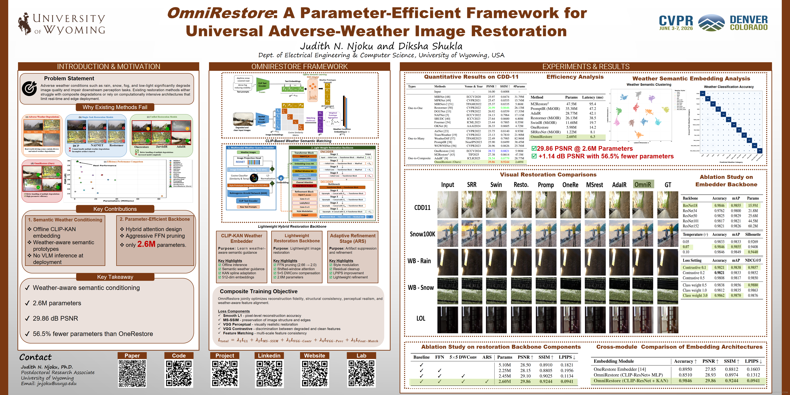

CVPR Workshop 2026



Visual Restoration Results
Qualitative comparison of restoration results across CDD-11, Snow100K, WeatherBench (rain and snow), and LOL benchmarks. From left to right: Input, SRResNet (SRR), SwinIR (Swin), Restormer (Resto.), PromptIR (Prompt), OneRestore (OneRe), M2Restore (MSrest), AdaIR, OmniRestore (OmniR), and Ground Truth (GT). OmniRestore consistently recovers clearer structural details, sharper edges, improved illumination, and more realistic textures under diverse adverse-weather degradations while maintaining lightweight real-time efficiency.

Abstract
Reliable perception under adverse weather remains a significant challenge for vision systems. While state-of-the-art multi-weather image restoration models achieve strong performance, they often rely on large architectures with high parameter counts, limiting their utility for real-time or edge deployment. To address this efficiency gap, we propose OmniRestore, a lightweight multimodal framework specifically designed for adverse-weather image restoration across rain, fog, snow, and low-light conditions, including challenging composite degradations.
OmniRestore consists of two key components: (i) a multimodal weather-scene embedder that aligns CLIP-derived text prototypes with image features via a ResNet encoder, refined offline by a Kolmogorov-Arnold Network (KAN) adapter to produce compact, weather-discriminative condition embeddings; and (ii) a parameter-efficient restoration backbone that injects these embeddings through hybrid attention blocks integrating embedding-conditioned cross-attention, shifted window self-attention, and channel recalibration. Evaluated across CDD-11, Snow100K, LOL, and WeatherBench, OmniRestore achieves state-of-the-art restoration fidelity and perceptual quality, outperforming the leading unified model OneRestore by +1.14 dB PSNR and 41% in LPIPS on CDD-11. Notably, with only 2.6M inference-time parameters , a 56.5% reduction compared to OneRestore , OmniRestore offers a significantly more practical solution for resource-constrained and edge-deployment environments.
Contributions
CLIP-KAN Weather-Scene Embedder
Aligns CLIP text prototypes with visual features via a Kolmogorov-Arnold Network (KAN) adapter. Operates fully offline at inference , zero VLM, zero text encoder at test time. Achieves 98.46% weather classification accuracy.
Lightweight Hybrid Attention Backbone
U-Net with embedding-conditioned cross-attention, Swin shifted windows (W=8), and channel recalibration. FFN width pruning (factor 2.0) delivers ~70% parameter reduction, compensated by 5×5 DWConv kernels.
Adaptive Refinement Stage (ARS)
StyleModulation derives per-instance gain (γ) and bias (β) from condition embedding e. Enables degradation-specific color recalibration with negligible overhead. +41% LPIPS improvement over OneRestore on CDD-11.
Perceptual Composite Loss
Five-component objective: Smooth L1 + MS-SSIM + VGG-Contrastive + VGG-Perceptual + Deep Supervision. VGG contrastive explicitly pushes restored output away from degraded input and weather-degraded negatives.
Method

Fig. 2. Overview of OmniRestore. (1) Multimodal Embedder (left): ResNet + KAN adapter aligns visual features with CLIP text prompts offline, generating weather condition embedding e. (2) Lightweight Backbone (right): U-Net-style transformer injects e via cross-attention, concluding with ARS for final artifact removal.
Quantitative Results
Comparison on CDD-11 (11 degradation types: 4 single + 7 composite). Red = best, blue = second best. All One-to-Composite models retrained on CDD-11.
| Category | Method | Venue & Year | PSNR ↑ | SSIM ↑ | #Params |
|---|---|---|---|---|---|
| One-to-One (Single Degradation) | |||||
| MIRNet | ECCV'20 | 25.97 | 0.8474 | 31.79M | |
| MPRNet | CVPR'21 | 25.47 | 0.8555 | 15.74M | |
| Restormer | CVPR'22 | 26.99 | 0.8646 | 26.13M | |
| NAFNet | ECCV'22 | 24.13 | 0.7964 | 17.11M | |
| SRUDC | ICCV'23 | 27.64 | 0.8600 | 6.80M | |
| One-to-Many (Multi-degradation) | |||||
| AirNet | CVPR'22 | 23.75 | 0.8140 | 8.93M | |
| PromptIR | NeurIPS'23 | 25.90 | 0.8499 | 38.45M | |
| WGWNSNet | CVPR'23 | 26.96 | 0.8626 | 25.76M | |
| One-to-Composite (Unified Restoration) | |||||
| OneRestore | ECCV'24 | 28.72 | 0.8821 | 5.98M | |
| AdaIR | ICLR'25 | 28.54 | 0.8779 | 28.77M | |
| M2Restore | TIP'25 | 27.38 | 0.8614 | 47.5M | |
| OmniRestore (Ours) | CVPRW'26 | 29.86 | 0.9244 | 2.60M | |
Ablation Studies
Step-by-step validation of each design choice on CDD-11. The KAN adapter outperforms an equivalent MLP by +0.93 dB PSNR and -0.0371 LPIPS.
Backbone Component Ablation
| Baseline | FFN | 5×5 DWConv | ARS | Params | PSNR | LPIPS |
|---|---|---|---|---|---|---|
| ✓ | 5.10M | 28.50 | 0.1821 | |||
| ✓ | ✓ | 2.25M | 28.15 | 0.1956 | ||
| ✓ | ✓ | ✓ | 2.45M | 29.10 | 0.1134 | |
| ✓ | ✓ | ✓ | ✓ | 2.60M | 29.86 | 0.0941 |
Cross-Module Embedding Comparison
| Embedding Module | Accuracy | PSNR | LPIPS |
|---|---|---|---|
| OneRestore Embedder | 0.8950 | 27.85 | 0.1603 |
| CLIP-ResNet + MLP | 0.8510 | 28.93 | 0.1312 |
| CLIP-ResNet + KAN (Ours) | 0.9846 | 29.86 | 0.0941 |
Poster

BibTeX
@InProceedings{Njoku_2026_CVPR,
author = {Njoku, Judith and Shukla, Diksha},
title = {OmniRestore: A Parameter-Efficient Framework for Universal Adverse-Weather Image Restoration},
booktitle = {Proceedings of the IEEE/CVF Conference on Computer Vision and Pattern Recognition (CVPR) Workshops},
month = {June},
year = {2026},
pages = {2236-2246}
}
Contact
If you have any questions about OmniRestore, feel free to reach out:
jnjoku@uwyo.edu
Judith N. Njoku · University of Wyoming ·
LinkedIn